Chapter 6 showed that a better prompt gives a better answer without touching the model's weights. This chapter keeps going in that direction: what else can we wrap around an unchanged LLM to make it more useful? Using the LangChain framework, the authors first load a small, quantized (compressed) Phi-3 model. They then build chains: a prompt template glued to the model, and several prompts run one after another. Next they give the stateless model memory in three ways (the full chat history, only the last k turns, or a running summary) and compare the trade-offs. Finally they build an agent: an LLM that decides for itself which tools to use (a web search and a calculator) by looping through Thought → Action → Observation, the ReAct pattern.
Read the rows top to bottom. Each row is a problem the authors hit, and the orange box is the fix. Every fix is a modular component that gets chained onto the LLM, so by the end the "system" is much more than the model.
Chapter 6 showed that prompt engineering can do wonders for the accuracy of a text-generation LLM (large language model). A few small tweaks guide the model to more purposeful, accurate answers. The important point: none of this fine-tunes the model (changes its weights). It simply uses the model more efficiently.
This chapter continues that line of thought: what else can we do to improve the experience and the output we get from the LLM without fine-tuning it? Luckily, many methods exist. These advanced techniques sit at the foundation of many LLM-based systems and are, the authors argue, among the first things people build when they design such a system.
The chapter covers four methods for improving the quality of generated text:
All four are integrated in the LangChain framework, which the chapter uses throughout. LangChain is one of the earlier frameworks that make working with LLMs simpler through useful abstractions (ready-made building blocks that hide the plumbing). Newer frameworks worth knowing are DSPy and Haystack. Some of LangChain's abstractions are shown in Figure 7-1. Retrieval also appears in the figure, but it is covered in the next chapter.
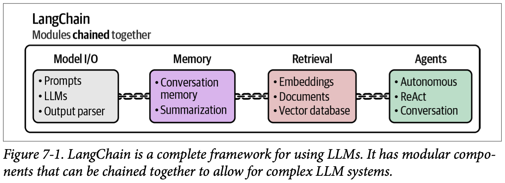
How to read this figure. The big box is LangChain, "modules chained together". Inside are four groups joined by little chain links, left to right: Model I/O (prompts, LLMs, output parser), Memory (conversation memory, summarization), Retrieval (embeddings, documents, vector database) and Agents (autonomous, ReAct, conversation). The chain links are the point: each group is a separate piece you can plug into the others. This chapter covers every group except Retrieval (Chapter 8).
Each technique is strong on its own, but the real value is not in isolation. When you combine all of them you get an LLM-based system with very good performance. The combination is where LLMs truly shine.
The LLM is a talented cook in a dhaba kitchen. Model I/O is getting the cook hired and set up at the stove. A prompt template is the standard order slip ("table 4, 2 paneer, less spicy") so the cook always gets orders in the format he understands. Memory is the order book that reminds him what table 4 already ate. Tools are the helpers: someone to fetch vegetables from the market (search) and a cashier with a calculator. The agent is the cook deciding on his own, "I need tomatoes, send the boy to the market". Where it breaks: a real cook remembers on his own; an LLM remembers nothing unless you hand it the order book every single time.
An LLM is a pure function: text in, text out. It has no state, no tools and no way to act. Everything in this chapter is ordinary software around that function: code that builds the input string (templates, memory), code that calls the model several times (chains), and code that reads the model's output, runs something, and feeds the result back in (agents). LangChain packages these patterns so you write less glue code.
"How do you improve an LLM app without fine-tuning?" Say: "Fine-tuning is the last resort. First I fix the prompt and template, then split complex tasks into a chain of smaller prompts, add memory so the conversation has context, add retrieval for facts, and add tools via an agent loop for things the model can't do, like maths or live data. All of these are cheaper, faster to iterate and easier to debug than retraining."
Before we can use LangChain's features, we need to load an LLM. As in earlier chapters the model is Phi-3, but with a twist: a GGUF variant. A GGUF model is a compressed version of the original model, made with a method called quantization. Quantization reduces the number of bits needed to store each of the LLM's parameters (its weights).
Bits are 0s and 1s; they encode values in binary. More bits can represent a wider range of values (and more precise values), but they need more memory to store. Figure 7-2 shows this with the number π.
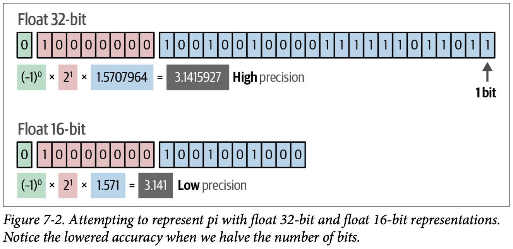
How to read this figure. A floating-point number is split into three coloured parts. Green: the sign bit (0 = positive, so (−1)0 = +1). Pink: the exponent bits, which pick the power of two (here 21 = 2). Blue: the mantissa (fraction) bits, which give the digits (here 1.5707964). Multiply them: +1 × 2 × 1.5707964 = 3.1415927, "high precision" with 32 bits. The arrow "1 bit" points at the last blue box to show how small one bit's contribution is. The 16-bit version has far fewer blue boxes, so the mantissa can only be 1.571 and π comes out as 3.141: "low precision". Same idea, half the storage, fewer correct digits. (Two simplifications in the figure: its 16-bit row keeps the 8 pink exponent bits and only shortens the mantissa, whereas real IEEE float16 has 5 exponent and 10 mantissa bits; and 3.141 is rounded for display, the exact float16 value is 3.140625. The widget below uses the real formats.)
Quantization reduces the bits per parameter while trying to keep most of the original information. You lose some precision, but usually it is worth it: the model runs much faster, needs less VRAM (video RAM, the GPU's memory), and is often almost as accurate as the original.
The book's analogy: if someone asks the time, you might say "14:16". That is correct but not fully precise; "14:16 and 12 seconds" would be more accurate. But seconds are seldom useful, so we round to whole minutes. Quantization does the same: it drops precision (the seconds) without dropping vital information (the hours and minutes).
Chapter 12 explains how quantization works under the hood; Maarten Grootendorst's "A Visual Guide to Quantization" is a full visual guide. For now, the book says it will use an 8-bit variant of Phi-3 instead of the original 16-bit one, "cutting the memory requirements almost in half".
Look for models quantized to at least 4 bits; they balance compression and accuracy well. 3-bit or even 2-bit models exist, but the quality drop becomes noticeable. At that point it is better to pick a smaller model at higher precision.
float32 and float16 are computed exactly in your browser. The 8-bit and 4-bit rows use a simple "integer × scale" scheme with a scale picked by hand (modelled) to show the idea that integers with a shared scale lose even more digits; real quantizers choose scales per block of weights (Ch.12).
First download the model. The link holds several files with different bit-variants; the book picks FP16, "the 16-bit variant":
!wget https://huggingface.co/microsoft/Phi-3-mini-4k-instruct-gguf/resolve/main/Phi-3-mini-4k-instruct-fp16.ggufNote the mismatch in the book: p223 says it will use an 8-bit variant, but p224 downloads the fp16 file and calls FP16 "the model we choose". The code uses the 16-bit file. If you want the 8-bit saving, pick a q8/q4 file from the same repository instead.
The GGUF file is loaded with llama-cpp-python (Python bindings for the llama.cpp inference engine) through LangChain:
from langchain import LlamaCpp
# Make sure the model path is correct for your system!
llm = LlamaCpp(
model_path="Phi-3-mini-4k-instruct-fp16.gguf",
n_gpu_layers=-1,
max_tokens=500,
n_ctx=2048,
seed=42,
verbose=False
)model_path: where the GGUF file is on disk.n_gpu_layers=-1: put all layers of the model on the GPU (−1 means "every layer"); a positive number would offload only that many and run the rest on the CPU.max_tokens=500: generate at most 500 new tokens per call.n_ctx=2048: the context window: prompt plus output may be at most 2,048 tokens. This matters later, when memory makes prompts grow.seed=42: fixes the random seed so sampling is repeatable.verbose=False: hide llama.cpp's loading logs.In LangChain you generate text with the invoke function:
llm.invoke("Hi! My name is Maarten. What is 1 + 1?")
''We get no output, an empty string. As earlier chapters showed, Phi-3 needs a specific prompt template. With transformers that was applied for us; here we must apply it explicitly. Instead of copy-pasting the template every time, we will use one of LangChain's core features: chains (next plate).
Every example in the chapter works with any LLM: Phi-3, ChatGPT, Llama 3 or anything else. Phi-3 is the default, but the state of the art moves fast, so consider a newer model. The Open LLM Leaderboard (a ranking of open-source LLMs) helps you choose one for your use case. If you can't run LLMs locally, use ChatGPT instead:
from langchain.chat_models import ChatOpenAI
# Create a chat-based LLM
chat_model = ChatOpenAI(openai_api_key="MY_KEY")Weights only: parameters × bits ÷ 8 bytes. Real use needs extra memory for the KV cache and activations, so leave headroom. Beyond the book: Phi-3-mini has about 3.8 billion parameters (Microsoft's model card), which is the default here.
Your phone's photo gallery. A RAW photo is huge; a JPEG of the same picture is a fraction of the size and looks almost the same on screen. Squeeze it into a tiny WhatsApp thumbnail and faces start to blur. 16-bit is RAW, 8-bit and 4-bit are good JPEGs, 2-bit is the blurry thumbnail. Where it breaks: JPEG throws away detail your eye can't see; quantization throws away digits of numbers that are multiplied billions of times, so small errors can add up in ways a picture never shows.
Generating each token means reading every weight from memory. So the model's size in bytes decides two things: whether it fits in VRAM at all, and how fast tokens come out (moving fewer bytes is faster). Halving the bits halves both. Neural networks tolerate small rounding errors in individual weights well, which is why 8-bit and 4-bit models stay "almost as accurate".
Take a 3.8-billion-parameter model (beyond the book). At 16 bits = 2 bytes per weight: 3.8 × 2 = 7.6 GB. At 8 bits: 3.8 GB ("almost half", as the book says). At 4 bits: 1.9 GB, small enough for a laptop GPU. A 2-bit version (0.95 GB) would fit even more easily, but the book's tip says you'd do better with a smaller model at 4 bits.
"Your model doesn't fit on the GPU. What do you do?" Say: "Quantize it. Going from FP16 to 8-bit halves weight memory, 4-bit quarters it, usually with a small accuracy drop, and generation gets faster because decoding is memory-bandwidth bound. I'd stay at 4 bits or above; below that I'd rather use a smaller model at higher precision. Then I'd check the KV cache budget, since long contexts also eat memory." For a realtime voice stack, the speed gain from quantization directly cuts time-to-first-token.
In current LangChain versions LlamaCpp lives in langchain_community.llms and ChatOpenAI in langchain_openai. GGUF files usually name their scheme, e.g. Q4_K_M or Q8_0.
'' output.LangChain is named after one of its main methods, chains. You can run an LLM on its own, but its power shows when it is used with additional components, or even with other LLM calls. Chains extend what an LLM can do, and several chains can be connected together.
The most basic form is a single chain. Chains can take many forms of different complexity, but generally a chain connects an LLM with some additional tool, prompt or feature. Figure 7-3 shows the idea.
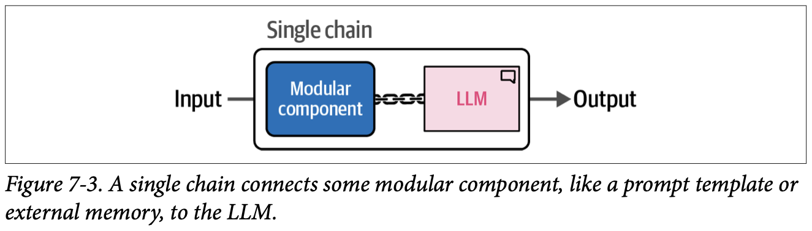
How to read this figure. Input enters from the left into a rounded box labelled "Single chain". Inside, a blue "Modular component" (for example a prompt template or external memory) is joined by a chain link to the pink "LLM". Output leaves on the right. From outside, the whole box behaves like one thing: input in, output out.
In practice chains get complex fast. You can extend the prompt template however you like, and combine several chains into intricate systems. To really understand what happens inside a chain, the book starts with the simplest useful one: adding Phi-3's prompt template to the LLM.
A chain is like a pipe fitting in a plumber's kit: the LLM is the tap, and you screw a filter, a meter or an extension onto it. Each fitting has the same thread on both ends, so you can screw them together in any order. Where it breaks: water flows the same way through any pipe; text from one link must actually match what the next link expects (variable names, formats), or the chain fails.
In code, a chain is function composition: output = llm(component(input)). LangChain gives every component the same interface (invoke), so the composition of two components is itself a component, and you can keep composing. That uniform interface is the whole trick.
"What's a chain in LangChain?" Say: "A composable pipeline step. Each piece, a prompt template, a model, a parser, a memory, exposes the same invoke interface, so you pipe them together and the result is again invokable. It's function composition for LLM calls, which makes pipelines easy to rearrange and test step by step."
The first chain is the prompt template that Phi-3 expects. In Chapter 6, transformers.pipeline applied the chat template automatically. Other packages don't always do that; they may need the template written out explicitly. With LangChain we will use a chain to create and apply a default template, which is also good hands-on practice with prompt templates.
The idea (Figure 7-4): chain the template together with the LLM. Then, instead of copy-pasting the template each time, we only define the user and system prompts.
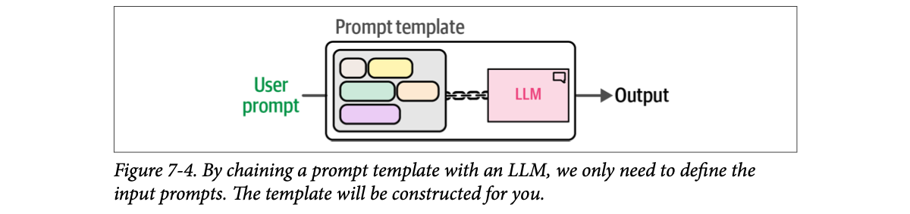
How to read this figure. It is Figure 7-3 with the "modular component" filled in: the component is now a prompt template, drawn as a grey box of coloured blocks (each block is one piece of the template: special tokens and the slot for your text). The green "User prompt" on the left is the only thing you supply; the template wraps it and passes the full string to the LLM.
Phi-3's template has four main components:
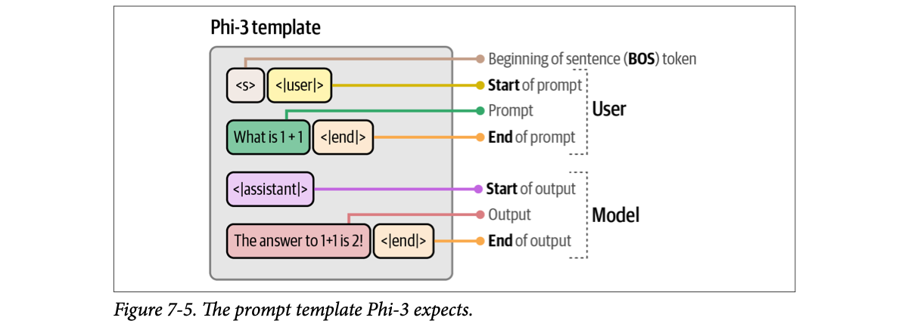
beginning of sentence token, <|user|> start of prompt, the prompt What is 1+1, <|end|> end of prompt, <|assistant|> start of output, the output The answer to 1+1 is 2!, <|end|> end of output" loading="lazy">How to read this figure. Inside the grey "Phi-3 template" box, the blocks are in the order the model sees them, and lines on the right label each one. <s> is the BOS (beginning of sentence) token. <|user|> = "start of prompt", then the green prompt "What is 1 + 1", then <|end|> = "end of prompt"; these three are bracketed as User. Below, <|assistant|> = "start of output", the red output "The answer to 1+1 is 2!", then <|end|> = "end of output"; bracketed as Model. When we call the model we stop right after <|assistant|>; the model writes the rest.
To build the chain, first create a template that follows Phi-3's format. The book describes the model as taking a system_prompt (what we generally expect from the LLM) and an input_prompt (the specific question); the code below uses just the input_prompt variable:
from langchain import PromptTemplate
# Create a prompt template with the "input_prompt" variable
template = """<s><|user|>
{input_prompt}<|end|>
<|assistant|>"""
prompt = PromptTemplate(
template=template,
input_variables=["input_prompt"]
){input_prompt} is a placeholder; input_variables tells LangChain which placeholders must be filled. Now chain the prompt and the LLM with the pipe operator | ("feed the left side's output into the right side"):
basic_chain = prompt | llm
# Use the chain
basic_chain.invoke(
{
"input_prompt": "Hi! My name is Maarten. What is 1 + 1?",
}
)The answer to 1 + 1 is 2. It's a basic arithmetic operation where you add one
unit to another, resulting in two units altogether.We pass a dictionary whose key matches the variable name. The output is the answer without any unnecessary tokens. From now on we never build the template by hand. The book notes that sampling was not disabled as before, so your output may differ. Figure 7-6 shows the whole single chain.
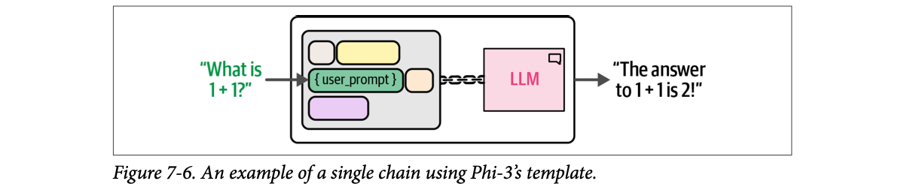
How to read this figure. Same picture as Figure 7-4, now with real data. The green question "What is 1 + 1?" drops into the green { user_prompt } slot of the template; the other coloured blocks are the fixed special tokens from Figure 7-5. The filled template goes through the chain link into the LLM, and out comes "The answer to 1 + 1 is 2!".
The model's behaviour shown is the book's result for Phi-3 (empty output without the template); the explanation of why is ours.
# Create a Chain that creates our business' name
template = "Create a funny name for a business that sells {product}."
name_prompt = PromptTemplate(
template=template,
input_variables=["product"]
)Adding a prompt template is just the very first step. The rest of the chapter adds more modular components to chains, starting with memory (the book says memory, though the next section it presents is sequential chains).
A railway reservation form. The clerk's computer only accepts the form with the train number box, the date box and the passenger boxes in the right order. If you hand over a plain note saying "two tickets to Pune tomorrow", nothing happens. The template is the printed form; you only fill the blanks. Where it breaks: the clerk would at least tell you "wrong form"; Phi-3 just returns an empty string, which is much harder to debug.
Chat models are fine-tuned on conversations written in one exact format with special tokens. Those tokens are how the model learned "now it's my turn to speak" (<|assistant|>) and "stop here" (<|end|>). Without them the raw text looks like nothing from training, so the most likely next token can be an end-of-text token straight away, which is why the output was empty. Each model family has its own tokens, so templates are model-specific.
"You swapped in a new open-source model and outputs became empty or rambling. Why?" Say: "Most likely the chat template. Instruct models expect their own special tokens marking user and assistant turns. Hosted APIs like OpenAI apply them for you; with raw llama.cpp or a completion endpoint you must apply them yourself, ideally from the tokenizer's chat template rather than hand-written strings." In an LLM gateway that routes between models, applying the right template per model is a classic source of bugs.
The prompt | llm syntax is LangChain's LCEL (LangChain Expression Language). Hugging Face tokenizers expose apply_chat_template(), which builds the exact string for any model from its own template.
The single chain worked because the task was simple. Some applications are more involved and need long or complex prompts to capture all the details. Instead, we can break the complex prompt into smaller subtasks run in sequence. That takes multiple calls to the LLM, but each call has a smaller prompt, and we get intermediate outputs along the way (Figure 7-7).
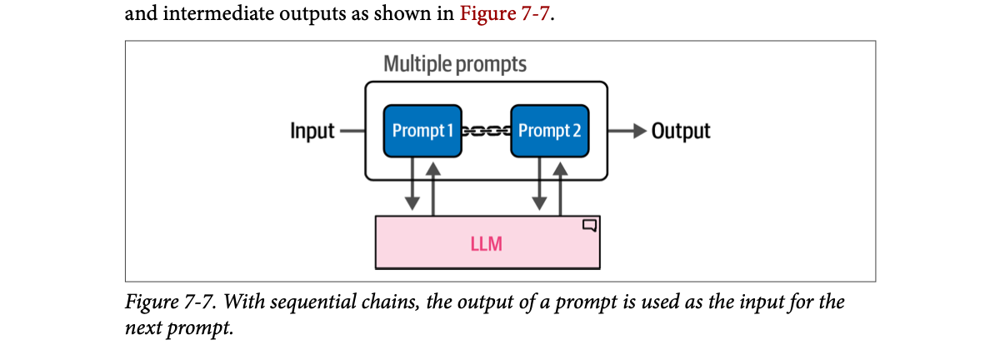
How to read this figure. Inside the "Multiple prompts" box are two blue prompts joined by a chain link. Under each prompt is a pair of arrows to and from one shared pink LLM: each prompt is a separate call to the same model. The input enters Prompt 1; its answer flows (through the chain link) into Prompt 2; Prompt 2's answer is the final output.
This is an extension of the previous example: instead of one chain, we link chains, and each link handles one specific subtask.
Example: generating a story. We could ask the LLM for a story with a title, a summary, character descriptions and so on, all in one prompt. Or we can cut it into manageable pieces. The book's story has three components:
The chain needs only one input from the user and then generates the three components one after another (Figure 7-8).
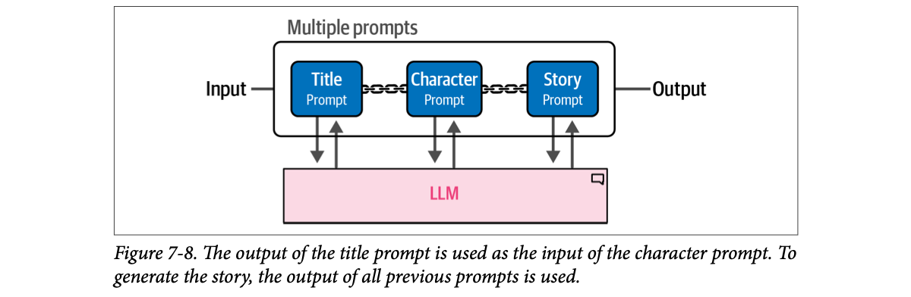
How to read this figure. Same layout as Figure 7-7 with three links: Title prompt → Character prompt → Story prompt, each calling the same LLM. The caption adds what the picture can't show: the character prompt uses the title, and the story prompt uses everything produced before it (summary, title and character).
This is the only link that needs input from the user. Its input variable is "summary" and its output is stored under "title". The prompt is "Create a title for a story about {summary}", where {summary} is our input:
from langchain import LLMChain
# Create a chain for the title of our story
template = """<s><|user|>
Create a title for a story about {summary}. Only return the title.<|end|>
<|assistant|>"""
title_prompt = PromptTemplate(template=template, input_variables=["summary"])
title = LLMChain(llm=llm, prompt=title_prompt, output_key="title")
title.invoke({"summary": "a girl that lost her mother"}){'summary': 'a girl that lost her mother',
'title': ' "Whispers of Loss: A Journey Through Grief"'}LLMChain bundles a prompt and an LLM; output_key="title" names the slot where the answer is stored. Note that the result shows both the input ("summary") and the output ("title"): the chain passes a growing dictionary along.
# Create a chain for the character description using the summary and title
template = """<s><|user|>
Describe the main character of a story about {summary} with the title {title}.
Use only two sentences.<|end|>
<|assistant|>"""
character_prompt = PromptTemplate(
template=template, input_variables=["summary", "title"]
)
character = LLMChain(llm=llm, prompt=character_prompt, output_key="character")We could run this by hand, but it will be used inside the automated chain instead.
# Create a chain for the story using the summary, title, and character description
template = """<s><|user|>
Create a story about {summary} with the title {title}. The main character is:
{character}. Only return the story and it cannot be longer than one paragraph.
<|end|>
<|assistant|>"""
story_prompt = PromptTemplate(
template=template, input_variables=["summary", "title", "character"]
)
story = LLMChain(llm=llm, prompt=story_prompt, output_key="story")
# Combine all three components to create the full chain
llm_chain = title | character | story
llm_chain.invoke("a girl that lost her mother"){'summary': 'a girl that lost her mother',
'title': ' "In Loving Memory: A Journey Through Grief"',
'character': ' The protagonist, Emily, is a resilient young girl who struggles to cope
with her overwhelming grief after losing her beloved and caring mother at an early
age. As she embarks on a journey of self-discovery and healing, she learns valuable
life lessons from the memories and wisdom shared by those around her.',
'story': " In Loving Memory: A Journey Through Grief revolves around Emily, a resilient
young girl who loses her beloved mother at an early age. ... ultimately finding solace
in honoring her mother's legacy while embracing a newfound sense of inner peace
amidst the painful loss."}Story text shortened here. Notice the title changed between the two runs ("Whispers of Loss" vs "In Loving Memory"): sampling is on, so each run differs.
Running the chain gives all three components from a single short input, the summary. Another advantage of splitting the task: we get access to the individual components. We can easily pull out just the title, which might not have been possible with one big prompt.
Values are the book's outputs (p230), shortened. Token counts are modelled.
A wedding card printer in Sivakasi. One worker sets the names, the next picks the design that matches, the last prints the full card using both. Each worker sees what the previous ones did and adds one thing. Asking one worker to do all of it in one go means more mistakes. Where it breaks: the workers can talk to each other; LLM links only see what you explicitly pass in the dictionary.
Each link is a separate forward pass with a short, focused prompt. The model does better on one clear instruction than on five mixed ones, and each output can be checked or parsed on its own. The cost is latency and tokens: three calls instead of one, run strictly one after another because each needs the previous output.
Say each call takes 1.5 s on the local Phi-3. The three-link chain takes about 4.5 s, against maybe 2.5 s for one long prompt that writes everything at once. In exchange you get the title as a clean field (no regex over a long answer), and if the story is bad you can rerun only link 3 with the same title and character.
"When would you use a chain of prompts instead of one prompt?" Say: "When the task has distinct steps, when later steps depend on earlier outputs, or when I need the intermediate results as structured fields. Each prompt is simpler, so quality and debuggability go up; the price is more calls and more latency. If latency matters, I'd run independent steps in parallel and only chain the dependent ones." In a voice agent you'd keep the user-facing path to one call and push extra chained steps into the background.
LLMChain is deprecated in newer LangChain releases; the same thing is written as prompt | llm | parser runnables, with RunnablePassthrough.assign(...) to keep earlier keys in the dictionary.
Used out of the box, LLMs don't remember what was said in a conversation. You can share your name in one prompt and it is forgotten by the next. Using the basic_chain from before:
# Let's give the LLM our name
basic_chain.invoke({"input_prompt": "Hi! My name is Maarten. What is 1 + 1?"})
# Hello Maarten! The answer to 1 + 1 is 2.
# Next, we ask the LLM to reproduce the name
basic_chain.invoke({"input_prompt": "What is my name?"})
# I'm sorry, but as a language model, I don't have the ability to know personal
# information about individuals. You can provide the name you'd like to know
# more about, and I can help you with information or general inquiries related to it.The LLM doesn't know the name we just gave it. The reason: these models are stateless. They have no memory of any previous conversation. Each call is completely independent. As Figure 7-9 shows, chatting with an LLM that has no memory is not a great experience.
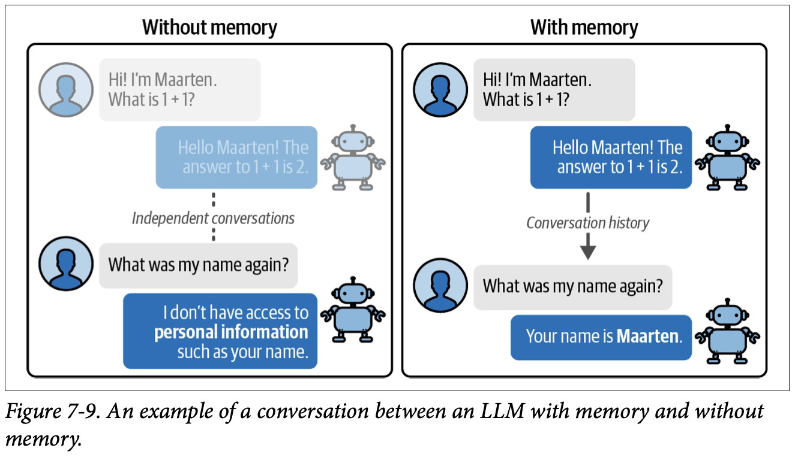
How to read this figure. Two panels with the same chat. Left, "Without memory": the first exchange (name + 1 + 1) is faded and separated from the second by a dotted line labelled "Independent conversations"; asked "What was my name again?", the bot says it doesn't have access to personal information such as your name. Right, "With memory": a solid arrow labelled "Conversation history" carries the first exchange into the second, and the bot answers "Your name is Maarten."
To make the model stateful, we add a type of memory to the chain. The book says it covers two common methods:
The section list says "two" but the chapter actually walks through three (buffer, windowed buffer, summary), and the chapter summary says "three different methods".
A government office where a different clerk serves you at every visit and nobody keeps a file. Each time you must explain your case from the start. "Memory" is you carrying your own file folder and putting it on the desk every visit. Where it breaks: a clerk can skim a thick folder; the LLM must read every word of it every time, and the folder can only be so thick (the context window).
The model's weights never change during a chat, and nothing is stored between API calls. The only thing the model "knows" about the conversation is what is in the current prompt. So "memory" in LLM apps always means your code storing past turns and putting (some form of) them back into the next prompt. The three methods differ only in what they put back.
"How does ChatGPT remember what I said earlier?" Say: "The model itself is stateless. The application stores the conversation and resends it, or a compressed version of it, with every request. So memory is an application-layer concern: you choose how much history to send, trading token cost and latency against how much the model can recall."
The most intuitive way to give an LLM memory: remind it exactly what happened. Copy the full conversation history and paste it into the prompt (Figure 7-10).
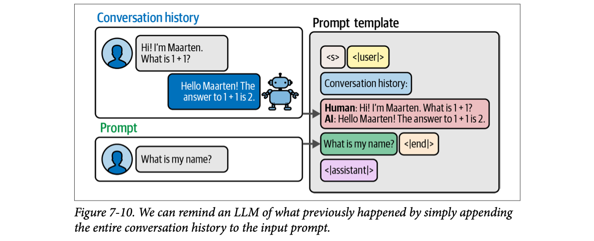
How to read this figure. Left top: the earlier exchange ("Conversation history"). Left bottom: the new "Prompt", "What is my name?". Both arrows point into the grey prompt template on the right, which now reads, top to bottom: <s> <|user|>, a blue label "Conversation history:", a red block with the history rewritten as Human: … / AI: … lines, then the new question with <|end|>, then <|assistant|>. The model reads its own earlier answer and finds the name.
In LangChain this is called ConversationBufferMemory. To use it, first update the prompt so it has a slot for the history:
# Create an updated prompt template to include a chat history
template = """<s><|user|>Current conversation:{chat_history}
{input_prompt}<|end|>
<|assistant|>"""
prompt = PromptTemplate(
template=template,
input_variables=["input_prompt", "chat_history"]
)The new input variable chat_history is where the conversation history goes, before our question. Next, create the memory and link it to that variable with memory_key. The memory stores all the conversations we've had with the LLM so far. Then chain LLM, memory and prompt together:
from langchain.memory import ConversationBufferMemory
# Define the type of memory we will use
memory = ConversationBufferMemory(memory_key="chat_history")
# Chain the LLM, prompt, and memory together
llm_chain = LLMChain(
prompt=prompt,
llm=llm,
memory=memory
)
# Generate a conversation and ask a basic question
llm_chain.invoke({"input_prompt": "Hi! My name is Maarten. What is 1 + 1?"}){'input_prompt': 'Hi! My name is Maarten. What is 1 + 1?',
'chat_history': '',
'text': " Hello Maarten! The answer to 1 + 1 is 2. Hope you're having a great day!"}The answer is under 'text', the question under 'input_prompt', the history under 'chat_history'. Since this is the first call, the history is empty. Now the follow-up:
# Does the LLM remember the name we gave it?
llm_chain.invoke({"input_prompt": "What is my name?"}){'input_prompt': 'What is my name?',
'chat_history': "Human: Hi! My name is Maarten. What is 1 + 1?\nAI: Hello
Maarten! The answer to 1 + 1 is 2. Hope you're having a great day!",
'text': ' Your name is Maarten.'}With memory added to the chain, the LLM uses the history to find the name. Figure 7-11 gives the overview.
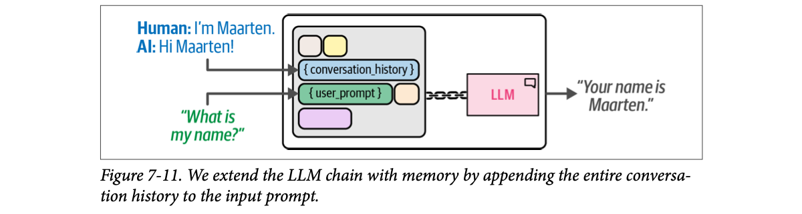
How to read this figure. This is Figure 7-6 with one extra slot. The template now has a blue { conversation_history } slot above the green { user_prompt } slot. Two arrows fill them: the past turns (Human / AI) and the new question. The chained LLM answers "Your name is Maarten."
Turns 1–2 are the book's; turns 3–4 and all token counts are modelled (about 1 token per 4 characters).
A cricket commentator who, before every ball, re-reads the full ball-by-ball log of the match from the first over. Early in the innings that's quick. By the 45th over he is reading for ages before each ball, and in a Test match the log won't fit on his desk. Where it breaks: a commentator would skim; the LLM processes every token of the history at full cost.
The memory object simply keeps a list of (human, AI) messages. Before each call it formats them as Human: …\nAI: … text and drops that into {chat_history}; after the call it appends the new pair. Nothing is lost while it fits, but the prompt length is the sum of all past turns, so cost and prefill time grow with every message.
"What's wrong with just sending the full chat history?" Say: "It's the simplest and loses nothing, but the prompt grows linearly, so each turn gets slower and more expensive and you eventually hit the context limit. Very long histories also make it harder for the model to find the relevant fact. It's fine for short sessions; for long ones I'd window it, summarize it or retrieve from it."
The previous example is basically a chatbot: you talk, it remembers. But as the conversation grows, so does the prompt, until it exceeds the token limit.
One way to keep the context small: use only the last k conversations (exchanges) instead of the full history. In LangChain this is ConversationBufferWindowMemory, where k decides how many are passed into the prompt:
from langchain.memory import ConversationBufferWindowMemory
# Retain only the last 2 conversations in memory
memory = ConversationBufferWindowMemory(k=2, memory_key="chat_history")
# Chain the LLM, prompt, and memory together
llm_chain = LLMChain(
prompt=prompt,
llm=llm,
memory=memory
)The book then runs four questions to show what is remembered. Note it calls predict(...) for the first two and invoke({...}) later. predict normally returns just the text, yet the book prints a full dictionary after it, so that printout probably came from an invoke run.
# Ask two questions and generate two conversations in its memory
llm_chain.predict(input_prompt="Hi! My name is Maarten and I am 33 years old. What is 1 + 1?")
llm_chain.predict(input_prompt="What is 3 + 3?"){'input_prompt': 'What is 3 + 3?',
'chat_history': "Human: Hi! My name is Maarten and I am 33 years old. What is 1 + 1?\nAI:
Hello Maarten! It's nice to meet you. Regarding your question, 1 + 1 equals 2. ...
(Note: This response answers the provided mathematical query while maintaining
politeness and openness for additional inquiries.)",
'text': " Hello Maarten! It's nice to meet you as well. Regarding your new question,
3 + 3 equals 6. ..."}The history so far is in "chat_history". Under the hood LangChain saves it as an exchange between you (labelled Human) and the LLM (labelled AI). (Phi-3 even added a chatty "(Note: …)" to its own answer, which now sits in memory too.)
# Check whether it knows the name we gave it
llm_chain.invoke({"input_prompt":"What is my name?"})
# 'text': ' Your name is Maarten, as mentioned at the beginning of our conversation. ...'It remembers the name: turn 1 is still inside the window of 2. The history now holds both previous exchanges. But with this question we are at three exchanges, and the memory keeps only the last two, so the very first one drops out. That first one held the age:
# Check whether it knows the age we gave it
llm_chain.invoke({"input_prompt":"What is my age?"}){'input_prompt': 'What is my age?',
'chat_history': "Human: What is 3 + 3?\nAI: Hello again! 3 + 3 equals 6. ...
\nHuman: What is my name?\nAI: Your name is Maarten.",
'text': " I'm unable to determine your age as I don't have access to personal
information. Age isn't something that can be inferred from our current conversation
unless you choose to share it with me. How else may I assist you today?"}The LLM has no access to the age, because that exchange is no longer in the history. (The AI wording in this history differs slightly from the earlier printout; the book's examples were evidently run separately.)
So this method reduces the size of the history, but keeps only the last few exchanges, which is not ideal for long conversations. Next: summarize the history instead.
With k = 2 this replays the book's run exactly (p234–235). Other k values show what would have happened (modelled).
A WhatsApp group where you only ever scroll up two messages. You see what was just said, but you've no idea someone mentioned the venue an hour ago. Where it breaks: you could scroll further if you wanted; the windowed LLM literally never receives the older messages.
The memory still stores everything (or at least enough), but when building the prompt it slices the list to the last k human/AI pairs. Prompt size becomes roughly constant (k × average exchange length), so cost stops growing. The price is a hard cut-off: anything older than k exchanges is gone, regardless of how important it was. The name survived only because it was recent, not because it mattered.
Average exchange = 120 tokens. After 30 exchanges a full buffer sends 3,600 tokens of history, more than Phi-3's n_ctx=2048 allows. A window of k = 5 sends about 600 tokens every time, no matter how long the chat runs.
"How would you cap memory cost in a long-running chatbot?" Say: "Simplest is a sliding window of the last k turns: constant prompt size, zero extra calls, but hard forgetting. I usually pin key facts (user name, task goal) in the system prompt or a profile store so they survive the window, and add a summary or retrieval for older context." In a realtime voice agent a short window keeps latency predictable, which is often worth more than perfect recall.
Memory is vital for a good interactive experience. But with ConversationBufferMemory the history keeps growing toward your token limit, and ConversationBufferWindowMemory solves that only partly, because just the last k exchanges are kept.
You could use an LLM with a larger context window, but those tokens still have to be processed before any output is generated, which increases compute time. The more sophisticated option is ConversationSummaryMemory: as the name says, it summarizes the whole conversation history down to the main points.
The summarizing is done by another LLM call: an LLM is given the history and asked for a concise summary. A nice advantage of using a separate LLM is that it doesn't have to be the same model you chat with. Figure 7-12 shows the process.
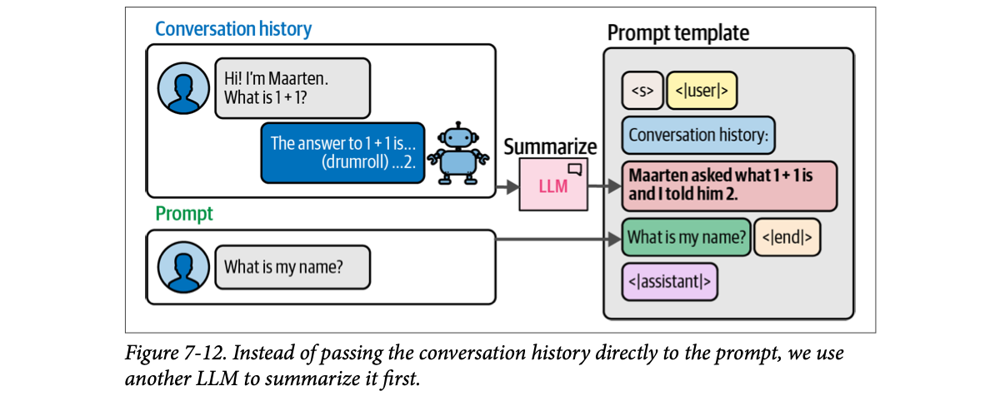
How to read this figure. Compare with Figure 7-10. The history (with a playful "The answer to 1 + 1 is… (drumroll) …2.") no longer goes straight into the template. It passes through a small pink Summarize LLM box first, and what lands in the "Conversation history:" slot is a short line: "Maarten asked what 1 + 1 is and I told him 2." The new prompt still goes in unchanged. The drumroll is gone: summaries drop detail.
So every question now costs two calls:
First prepare the summarization template:
# Create a summary prompt template
summary_prompt_template = """<s><|user|>Summarize the conversations and update
with the new lines.
Current summary:
{summary}
new lines of conversation:
{new_lines}
New summary:<|end|>
<|assistant|>"""
summary_prompt = PromptTemplate(
input_variables=["new_lines", "summary"],
template=summary_prompt_template
)Two variables: {summary} is the summary so far, {new_lines} is the latest exchange. The model writes an updated summary, so the summary is rolled forward turn by turn rather than rebuilt from scratch.
Using ConversationSummaryMemory is like before; the difference is that we must also give it an LLM for the summarizing. The book uses the same LLM for both jobs, but you could use a smaller LLM for summarizing to speed things up:
from langchain.memory import ConversationSummaryMemory
# Define the type of memory we will use
memory = ConversationSummaryMemory(
llm=llm,
memory_key="chat_history",
prompt=summary_prompt
)
# Chain the LLM, prompt, and memory together
llm_chain = LLMChain(
prompt=prompt,
llm=llm,
memory=memory
)
# Generate a conversation and ask for the name
llm_chain.invoke({"input_prompt": "Hi! My name is Maarten. What is 1 + 1?"})
llm_chain.invoke({"input_prompt": "What is my name?"}){'input_prompt': 'What is my name?',
'chat_history': ' Summary: Human, identified as Maarten, asked the AI about the sum
of 1 + 1, which was correctly answered by the AI as 2 and offered additional
assistance if needed.',
'text': ' Your name in this context was referred to as "Maarten". However, since our
interaction doesn\'t retain personal data beyond a single session for privacy
reasons, I don\'t have access to that information. How can I assist you further today?'}After each step the chain summarizes the conversation so far; here the first exchange became a one-sentence description in 'chat_history'. (Note the model's odd answer: it gives the name and claims it can't retain it "for privacy reasons". The summary worked; the small model's reply is just muddled.)
# Check whether it has summarized everything thus far
llm_chain.invoke({"input_prompt": "What was the first question I asked?"}){'input_prompt': 'What was the first question I asked?',
'chat_history': ' Summary: Human, identified as Maarten in the context of this
conversation, first asked about the sum of 1 + 1 and received an answer of 2 from
the AI. Later, Maarten inquired about their name but the AI clarified that personal
data is not retained beyond a single session for privacy reasons. The AI offered
further assistance if needed.',
'text': ' The first question you asked was "what\'s 1 + 1?"'}The summary was updated with the previous exchange, and the model correctly inferred the original question. To see the latest summary, read the memory directly:
# Check what the summary is thus far
memory.load_memory_variables({}){'chat_history': ' Maarten, identified in this conversation, initially asked about the
sum of 1+1 which resulted in an answer from the AI being 2. Subsequently, he sought
clarification on his name but the AI informed him that no personal data is retained
beyond a single session due to privacy reasons. The AI then offered further
assistance if required. Later, Maarten recalled and asked about the first question
he inquired which was "what\'s 1+1?"'}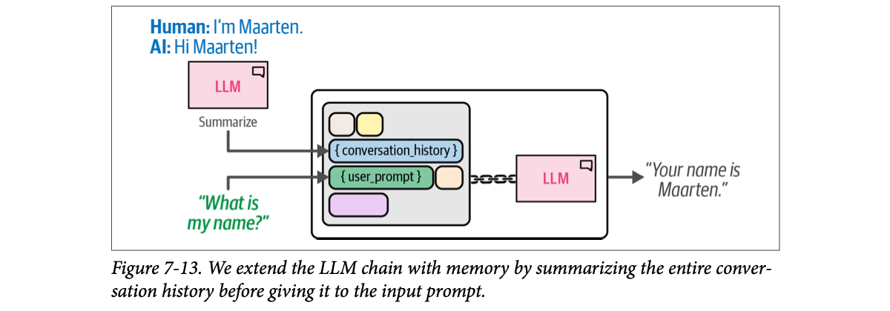
How to read this figure. Figure 7-11 again, with one addition on the left: the Human/AI history passes through a separate pink LLM labelled "Summarize" before it reaches the { conversation_history } slot. Count the pink LLM boxes: two. That is the two-calls-per-turn cost made visible.
Summaries keep the history relatively small without using many tokens at inference. But the original question was not saved word for word; the model had to infer it from the summary. That is a disadvantage when specific information must be kept exactly. And it needs multiple LLM calls (one for the prompt, one for the summary), which can slow down computing time.
Often it is a trade-off between speed, memory and accuracy. ConversationBufferMemory is instant but hogs tokens; ConversationSummaryMemory is slow but frees up tokens. Table 7-1 lists more pros and cons.
| Memory type | Pros | Cons |
|---|---|---|
| Conversation Buffer |
|
|
| Windowed Conversation Buffer |
|
|
| Conversation Summary |
|
|
All numbers modelled. Context limit = 2,048 tokens (the book's n_ctx). "Remembers turn 1 exactly?" asks whether the first exchange is still in the prompt word for word. Summary call cost = current summary + newest exchange + ~40 tokens of instructions.
Minutes of a society committee meeting. Nobody re-reads every word said in the last ten meetings; the secretary keeps running minutes and updates them after each meeting. Cheap to read, covers the whole history. But if someone asks "what exactly did Sharma-ji say about the parking fee?", the minutes only say "parking discussed". Where it breaks: a human secretary knows what matters to the committee; the summarizing LLM decides on its own what to drop, and its own slips (like the "privacy" remark here) get written into the minutes permanently.
The summary is a lossy, rolling compression: new_summary = LLM(old_summary + newest exchange). Prompt size stays near the summary length, so the main call stays fast. But every turn adds a second call whose output quality depends on the summarizer, and errors compound because each summary is built from the previous one, not from the original text.
30 turns × 120 tokens. Buffer: 3,600 history tokens per call (over the 2,048 limit). Window k = 3: 360 tokens, but turn 1 is gone. Summary of ~150 tokens: 150 tokens in the main call, plus a second call of about 150 + 120 + 40 = 310 tokens. Total tokens are low, but you pay two round trips of latency per turn.
"Buffer, window or summary memory: which would you pick?" Say: "It's a speed / memory / accuracy trade-off. Buffer is exact but grows without bound. Window is constant-size and free but forgets hard. Summary covers the whole history in few tokens but costs an extra LLM call per turn and loses exact wording. In practice I combine them: last few turns verbatim, a rolling summary of older turns updated asynchronously off the hot path, and important facts stored as structured data or retrievable memories." For a voice agent, never put the summary call in the response path; do it after the turn is spoken.
LangChain also ships ConversationSummaryBufferMemory (recent turns verbatim + summary of older ones), and newer versions move memory to RunnableWithMessageHistory and LangGraph checkpointers.
So far every system followed a user-defined set of steps: we decided title → character → story. One of the most promising ideas in LLMs is letting the model decide its own actions. This is usually called an agent: a system that uses a language model to determine which actions to take and in what order.
Agents can use everything seen so far (model I/O, chains, memory) and add two vital components:
Unlike chains, agents can show more advanced behaviour, like creating and self-correcting a roadmap to reach a goal. Through tools they can interact with the real world. So they can do many tasks beyond what an LLM can do on its own.
Example: LLMs are notoriously bad at maths and often fail simple maths tasks, but they could do far more with access to a calculator. As Figure 7-14 shows, the core idea is that the LLM is used not only to understand the query but also to decide which tool to use and when.
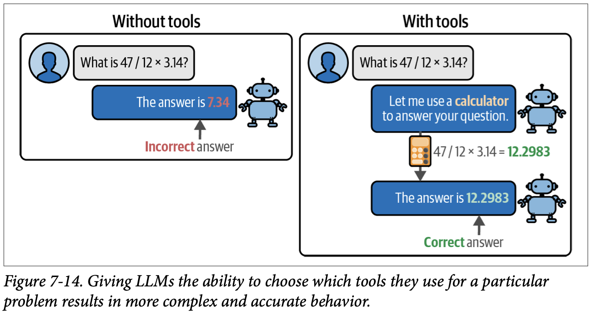
How to read this figure. Same question in both panels: "What is 47 / 12 × 3.14?". Without tools (left), the bot answers 7.34, marked "Incorrect answer" in red: it guessed digits. With tools (right), the bot first says "Let me use a calculator", the calculator computes 47 / 12 × 3.14 = 12.2983, and the bot returns that, marked "Correct answer" in green. The LLM's job changed from computing to deciding to compute.
Here we'd expect the LLM to pick the calculator for a maths task. Now imagine dozens of tools, like a search engine or a weather API: suddenly the LLM's capabilities grow a lot. Agents built on LLMs can be powerful general problem solvers. The tools matter, but the driving force behind many agent systems is a framework called ReAct (Reasoning and Acting).
| Chain (plates 3–9) | Agent (plates 10–12) | |
|---|---|---|
| Who picks the steps? | The developer, in code (title → character → story) | The LLM, at runtime, from a list of tools |
| Number of LLM calls | Fixed and known in advance | Varies per question (loops until "Final Answer") |
| Can it touch the outside world? | Only if you wired a step for it | Yes, through tools (search, calculator, APIs) |
| Self-correction | No | Yes: can revise its roadmap after each observation |
| Predictability / debugging | High | Lower; you need the intermediate-step log |
| Model needed | Small model is fine (Phi-3 in the book) | Must follow complex formats (book switches to GPT-3.5) |
Comparison table is ours, built from the chapter's statements.
The "guess" is simulated by deliberately wrong digit-juggling (modelled), to stand in for how an LLM predicts number tokens instead of computing. The calculator side computes for real (only + − × ÷ and brackets allowed).
A sharp kirana shop owner who chats easily with every customer but is shaky at long multiplication. He doesn't try mental maths for a ₹3,847 × 12 bill; he reaches for the calculator, and for stock prices he calls the wholesaler. His skill is knowing when to reach for which helper. Where it breaks: the shopkeeper can see the calculator's display himself; the LLM only "sees" whatever text your code feeds back as the tool result.
An LLM predicts tokens; "12.2983" is just a likely-looking string to it, so arithmetic is unreliable. A tool moves the exact work to deterministic code. The agent's control loop is ordinary software: show the LLM a list of tools, read which tool it asked for, run that tool, paste the result back, repeat. "Agent type" in LangChain is the policy that decides how that prompting and parsing works (ReAct is one type).
"What's the difference between a chain and an agent?" Say: "In a chain the developer fixes the steps in code. In an agent the LLM chooses the next step at runtime from a set of tools, looping until it decides it's done. Agents handle open-ended tasks, but they are less predictable, cost more calls and need guardrails: step limits, tool validation, and logging every step." Tool-calling agents in production are exactly this loop with structured tool calls.
ReAct (Yao et al., 2022) combines two important ideas in behaviour: reasoning and acting. LLMs are very good at reasoning; the book says this was explored in detail "in Chapter 5", though the reasoning techniques (chain-of-thought and friends) are in Chapter 6, Prompt Engineering.
Acting is a different story. LLMs can't act like you and me. To give them that ability we can tell an LLM it may use certain tools, such as a weather-forecast API. But LLMs can only generate text, so they have to be told to write specific queries that trigger the API.
ReAct merges the two: reasoning affects acting and actions affect reasoning. In practice it repeats three steps:
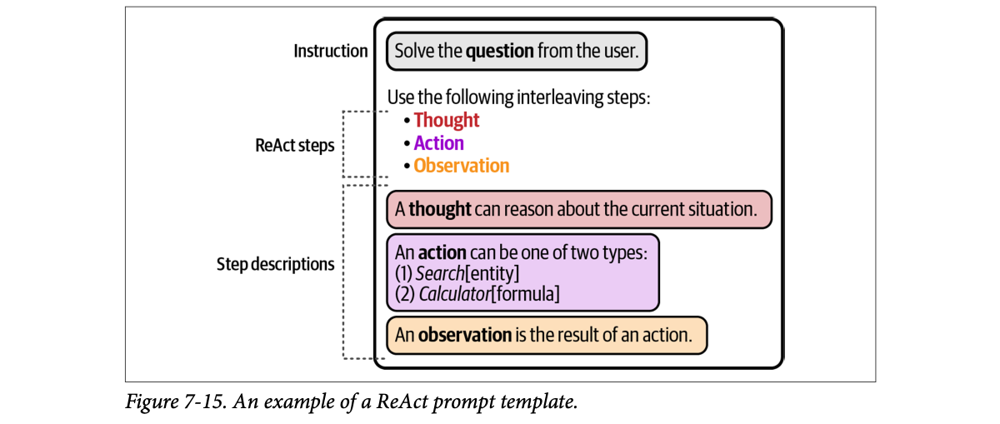
How to read this figure. It's one prompt, labelled in three parts on the left. Instruction: "Solve the question from the user." ReAct steps: "Use the following interleaving steps: Thought, Action, Observation." Step descriptions, one coloured box each: "A thought can reason about the current situation."; "An action can be one of two types: (1) Search[entity] (2) Calculator[formula]"; "An observation is the result of an action." So the whole "agent" is set up by a carefully written prompt that tells the model the format and the tools.
The book's example: you're on holiday in the United States and want to buy a MacBook Pro. You want the price, but converted to EUR, since you live in Europe and are more comfortable with those prices. As Figure 7-16 shows, the agent first searches the web for current prices (it might find one or several, depending on the search engine). Then it uses a calculator to convert USD to EUR, assuming we know the exchange rate.
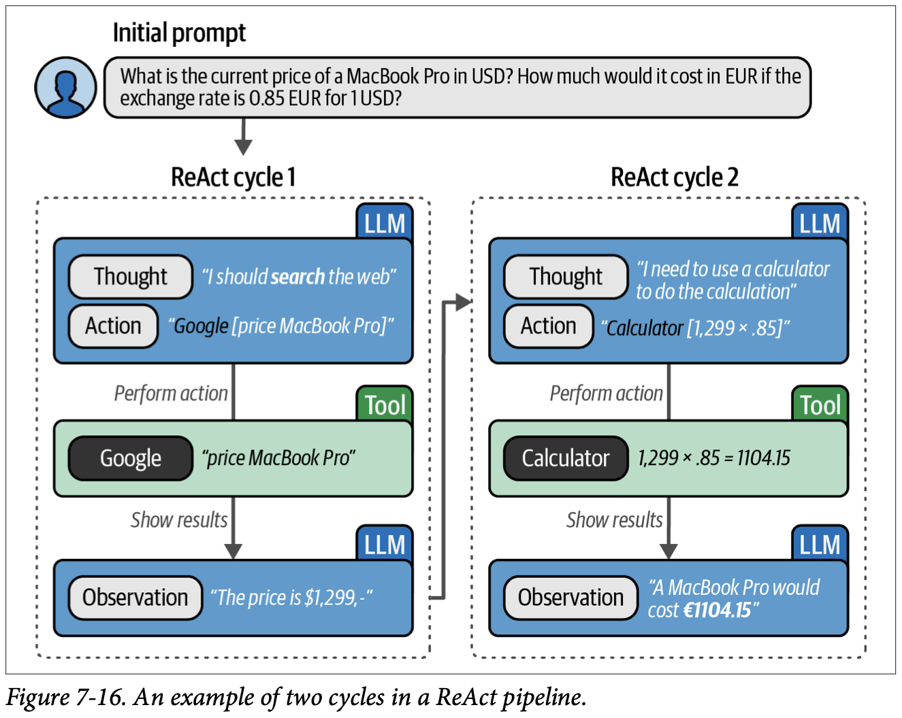
How to read this figure. Top: the user's initial prompt: "What is the current price of a MacBook Pro in USD? How much would it cost in EUR if the exchange rate is 0.85 EUR for 1 USD?" Below are two dotted boxes, one per cycle. Blue parts are written by the LLM, green parts are the Tool. Cycle 1: Thought "I should search the web" → Action "Google [price MacBook Pro]" → (perform action) the Google tool runs → (show results) Observation "The price is $1,299,-". An arrow carries this into cycle 2: Thought "I need to use a calculator to do the calculation" → Action "Calculator [1,299 × .85]" → the Calculator tool computes 1,299 × .85 = 1104.15 → Observation "A MacBook Pro would cost €1104.15". The $1,299 figure is illustrative; the real LangChain run in plate 12 found $2,249.00.
Throughout, the agent describes its thoughts (what it should do), its actions (what it will do) and its observations (the results of the action). This cycle of thoughts, actions and observations produces the agent's output.
Text follows Figure 7-16 (the illustrative $1,299 run).
A detective in a Byomkesh Bakshi story: "The servant was out at 9 (thought). Let me check the railway register (action). The register shows he bought a ticket at 8:50 (observation). So he wasn't in the house; next I should question the cook (thought)…" Each clue changes the next move. Where it breaks: the detective remembers everything; the LLM's "memory" of earlier cycles is only the scratchpad text pasted back into its prompt each time.
Writing the thought first is chain-of-thought prompting: the model reasons in text before committing to an action, which makes the action choice better. Making the model write the action in a fixed format (Action: tool / Action Input: …) lets plain code parse it, stop generation, run the tool, and append Observation: …. Then the model is called again with everything so far. The model never runs anything itself; it only writes text that your code acts on.
"Explain ReAct." Say: "ReAct interleaves reasoning and acting. The model writes a Thought, then an Action with an input in a fixed format; the runtime parses that, executes the tool, and appends the Observation; the model continues until it writes a Final Answer. Reasoning picks better actions, and observations ground the reasoning in real data, which cuts hallucination." Mention that modern function calling replaces the text parsing with structured tool calls, but the loop is the same.
The book now builds a pipeline that can search the web and use a calculator. Such autonomous processes generally need an LLM powerful enough to follow complex instructions closely. The small Phi-3 used so far isn't sufficient, so the example uses OpenAI's GPT-3.5:
import os
from langchain_openai import ChatOpenAI
# Load OpenAI's LLMs with LangChain
os.environ["OPENAI_API_KEY"] = "MY_KEY"
openai_llm = ChatOpenAI(model_name="gpt-3.5-turbo", temperature=0)temperature=0 makes the model pick its most likely token every time, so the agent's format-following is as steady as possible.
That Phi-3 is too small here doesn't mean only OpenAI's models can do it. Larger capable LLMs exist, but they need much more compute and VRAM. Local LLMs often come in several sizes, and within a model family a bigger model performs better. The chapter used a small model to keep compute low. As the field moves, small models improve too; the authors "would be anything but surprised" if small LLMs like the one in this chapter could eventually run this example.
Next, the agent's template. It spells out the ReAct steps the model must follow:
# Create the ReAct template
react_template = """Answer the following questions as best you can. You have
access to the following tools:
{tools}
Use the following format:
Question: the input question you must answer
Thought: you should always think about what to do
Action: the action to take, should be one of [{tool_names}]
Action Input: the input to the action
Observation: the result of the action
... (this Thought/Action/Action Input/Observation can repeat N times)
Thought: I now know the final answer
Final Answer: the final answer to the original input question
Begin!
Question: {input}
Thought:{agent_scratchpad}"""
prompt = PromptTemplate(
template=react_template,
input_variables=["tools", "tool_names", "input", "agent_scratchpad"]
){tools}: the name and description of every tool, filled in by LangChain.{tool_names}: just the names, so the model knows the allowed values for Action:.{input}: the user's question.{agent_scratchpad}: everything the agent has written and observed so far in this run (earlier Thought / Action / Observation lines). It grows each cycle; it is the agent's short-term memory.The template shows the flow: start with a question, generate intermediate thoughts, actions and observations, end with a final answer.
from langchain.agents import load_tools, Tool
from langchain.tools import DuckDuckGoSearchResults
# You can create the tool to pass to an agent
search = DuckDuckGoSearchResults()
search_tool = Tool(
name="duckduck",
description="A web search engine. Use this to as a search engine for general queries.",
func=search.run,
)
# Prepare tools
tools = load_tools(["llm-math"], llm=openai_llm)
tools.append(search_tool)Two tools: the DuckDuckGo search engine, wrapped as a Tool with a name ("duckduck"), a description (the LLM reads this to decide when to use it) and a func (the Python function to run); and llm-math, a math tool that gives access to a basic calculator. (It is loaded with llm=openai_llm because LangChain's math tool uses the LLM to turn the question into an expression before evaluating it.)
from langchain.agents import AgentExecutor, create_react_agent
# Construct the ReAct agent
agent = create_react_agent(openai_llm, tools, prompt)
agent_executor = AgentExecutor(
agent=agent, tools=tools, verbose=True, handle_parsing_errors=True
)create_react_agent combines model, tools and template into the "decide the next step" part. The AgentExecutor handles executing the steps: it runs the loop, calls the tools, and feeds observations back. verbose=True prints each intermediate step; handle_parsing_errors=True means that if the model writes something that doesn't match the format, the error is sent back to the model to fix instead of crashing the run.
# What is the price of a MacBook Pro?
agent_executor.invoke(
{
"input": "What is the current price of a MacBook Pro in USD? How much would it cost in EUR if the exchange rate is 0.85 EUR for 1 USD."
}
)While running, the model produces intermediate steps like Figure 7-17.
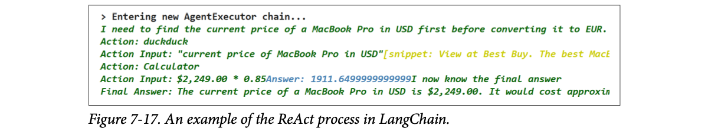
How to read this figure. This is the real verbose=True log. Green lines are the model's own text; yellow and blue are tool results. Line by line: "Entering new AgentExecutor chain…"; the thought "I need to find the current price of a MacBook Pro in USD first before converting it to EUR."; Action: duckduck with input "current price of MacBook Pro in USD"; the yellow search snippet (from Best Buy, cut off); Action: Calculator with input $2,249.00 * 0.85; the blue result Answer: 1911.6499999999999; "I now know the final answer"; and the Final Answer. Note the 1911.6499999999999: floating-point rounding again (plate 2), since 0.85 can't be stored exactly in binary.
These intermediate steps show how the model works through the ReAct template and which tools it uses, which lets us debug and check whether the agent uses its tools correctly. When finished, the output is:
{'input': 'What is the current price of a MacBook Pro in USD? How much would it cost
in EUR if the exchange rate is 0.85 EUR for 1 USD?',
'output': 'The current price of a MacBook Pro in USD is $2,249.00. It would cost
approximately 1911.65 EUR with an exchange rate of 0.85 EUR for 1 USD.'}With only a search engine and a calculator, that's impressive. But whether the answer is actually correct must be considered. Because the behaviour is fairly autonomous, we're not involved in the intermediate steps: there is no human in the loop to judge the quality of the output or the reasoning.
This double-edged sword needs careful system design to improve reliability. For example, the agent could return the website's URL where it found the price, or we could ask whether the output is correct at each step.
The "search" tool is a fake lookup table (prices modelled; the MacBook one matches the book's $2,249.00). The calculator really runs in your browser. The LLM's lines are scripted, but the loop (scratchpad, parse, tool, observe) is the real structure.
Sending a new office boy to buy something with your card and a list of rules. He comes back with the item and a total. Fast, but you weren't there: did he check two shops, or pay double at the first one? Asking him to bring the receipt (the URL) or to call you before paying (a check at each step) makes it safe. Where it breaks: the office boy has common sense; an agent will confidently return a wrong price from a stale snippet unless your design makes it show its sources.
The executor loop: build the prompt (template + tools + question + scratchpad) → call the LLM, stopping at "Observation:" → parse Action / Action Input → run the tool → append "Observation: result" to the scratchpad → repeat until the text contains "Final Answer:". The model sees its whole history each cycle, so the prompt grows, like the buffer memory of plate 7. Parsing is the fragile part, which is why handle_parsing_errors exists and why a model that follows formats well (GPT-3.5 here) is required.
Book's numbers: $2,249.00 × 0.85 = 1,911.65 EUR (the calculator printed 1911.6499999999999, the final answer rounded). Figure 7-16's illustrative run: $1,299 × 0.85 = 1,104.15 EUR. Two LLM cycles plus a final one means about three LLM calls and two tool calls for one user question: a useful number to have in mind when estimating agent latency and cost.
"How do you make an agent reliable in production?" Say: "Constrain and observe it. Few, well-described tools; structured tool-call outputs validated against a schema; a cap on steps and tokens; temperature 0; log every thought, action and observation for debugging; make it cite sources; and put a human or a verifier check before any irreversible action. Then evaluate on a fixed task set, because the agent's path changes from run to run." This maps directly onto tool-calling agents behind an LLM gateway.
Most current APIs (OpenAI, Anthropic, Gemini, many open models) support native tool / function calling, so the model returns a structured JSON tool call instead of Action: text, which removes most parsing errors. LangChain now steers agent building toward LangGraph. GPT-3.5 has been superseded by newer models.
The chapter extended LLMs by adding modular components. It started with a simple, reusable chain that connected the LLM to a prompt template. It then added memory to the chain so the LLM could remember conversations, exploring three methods (buffer, windowed buffer, summary) and their strengths and weaknesses.
Next came agents, which use LLMs to decide on their own actions. The ReAct framework uses an intuitive prompting format so an agent can reason in thoughts, take actions and observe the results. That led to an agent that freely uses its tools (web search and a calculator), showing how powerful agents can be.
With this foundation, the next chapter looks at how LLMs can improve existing search systems and even become the core of new, more powerful ones.
| Term | Meaning |
|---|---|
| LangChain | Framework with modular abstractions (model I/O, memory, retrieval, agents) that can be chained together. Alternatives named: DSPy, Haystack. |
| Model I/O | Loading and working with LLMs: prompts, models, output parsers. |
| Quantization | Storing parameters with fewer bits; less precision, much less memory, faster, usually almost as accurate. |
| GGUF | File format for (often quantized) models used by llama.cpp / llama-cpp-python. |
| VRAM | The GPU's memory; the model's weights must fit here. |
| FP16 / 8-bit / 4-bit | Bits per parameter. Rule of thumb: stay at 4-bit or above. |
| Chain | An LLM connected to another component (prompt, memory, tool) or to other chains. |
| Prompt template | A reusable prompt with placeholders like {input_prompt}; for Phi-3 it holds the special tokens. |
| <s>, <|user|>, <|assistant|>, <|end|> | Phi-3's special tokens: start (BOS), user turn, model turn, end of turn. |
| Sequential chain | Several prompts run in order, each using earlier outputs (title → character → story). |
| Stateless | The model keeps nothing between calls; memory must be added by the application. |
| ConversationBufferMemory | Pastes the full chat history into every prompt. |
| ConversationBufferWindowMemory | Pastes only the last k exchanges. |
| ConversationSummaryMemory | A second LLM call keeps a rolling summary of the chat; the summary goes into the prompt. |
| Agent | A system where an LLM decides which actions to take and in what order. |
| Tool | Something the agent can call to do what the LLM can't (calculator, search, weather API). |
| Agent type | The planning strategy that decides actions/tools (e.g. ReAct). |
| ReAct | Reasoning + Acting: repeat Thought → Action → Observation until a Final Answer. |
| agent_scratchpad | Template slot holding the agent's previous thoughts, actions and observations in this run. |
| AgentExecutor | LangChain's runner that executes the agent's steps and calls the tools. |
| Human in the loop | A person checking intermediate steps or outputs; absent in the autonomous agent, hence the need for careful design. |
| chaining, LLMChain, memory classes, tools, create_react_agent, AgentExecutor.microsoft/Phi-3-mini-4k-instruct-gguf, the GGUF files at several bit-widths.n_gpu_layers); wrapped by LangChain's LlamaCpp.DuckDuckGoSearchResults.load_tools.Same ideas elsewhere: LlamaIndex (pipelines and memory), Ollama and vLLM (serving quantized/open models), OpenAI/Anthropic tool calling and the Model Context Protocol (structured tools for agents), LangGraph (agent loops as graphs with checkpointed memory).
It gives up some precision of each parameter (fewer bits) and gains much lower memory (less VRAM) and faster running, while usually staying almost as accurate as the original.
Use at least 4-bit models. At 3 or 2 bits the quality loss becomes noticeable, and a smaller model at higher precision is the better choice.
llm.invoke("Hi! My name is Maarten…") return ''?Phi-3 expects its specific prompt template (<s><|user|> … <|end|><|assistant|>). Unlike transformers.pipeline, LlamaCpp doesn't apply it automatically, so it must be added, here with a prompt-template chain.
<s> start of prompt (BOS token); <|user|> start of the user's prompt; <|assistant|> start of the model's output; <|end|> end of either the prompt or the output.
Each prompt is smaller and simpler, and you get access to each intermediate component (e.g. the title) as its own field. Also only one user input (the summary) is needed.
Its template needs {title}, which wouldn't exist yet in the dictionary, so the chain would fail with a missing-variable error. Order matters because later links depend on earlier outputs.
LLMs are stateless: each call is independent and the model only sees the current prompt. Memory has to be added by putting past conversation into the prompt.
ConversationBufferWindowMemory(k=2), why did the model know the name but not the age?When the name question was asked, the first exchange (name + age) was still among the last two. By the age question there had been three exchanges, so the first one, holding the age, had dropped out.
Two: one for the user prompt and one to update the summary with the newest lines. The summary could use a smaller, faster LLM.
Buffer: slower generation as tokens grow (also only for large-context LLMs; long histories hurt retrieval). Window: only the last k interactions are captured (and they aren't compressed). Summary: an extra call per interaction, and quality depends on the LLM's summarizing.
Those tokens still have to be processed before generation starts, so compute time goes up.
Tools (to do things the LLM can't) and the agent type (which plans which actions or tools to use).
Thought: the LLM's reasoning about what to do next and why. Action: the external tool it triggers (search, calculator) with an input. Observation: the tool's result fed back, often summarized, which drives the next thought.
handle_parsing_errors=True do?The agent needs a model strong enough to follow the complex ReAct format closely; the small Phi-3 wasn't. handle_parsing_errors=True lets the executor send malformed outputs back to the model to correct instead of crashing.
There is no human in the loop, so design for it: make the agent return its source URL, check outputs at each step (by a human or a verifier), log the intermediate steps for debugging, limit and validate tools, and evaluate on known questions.